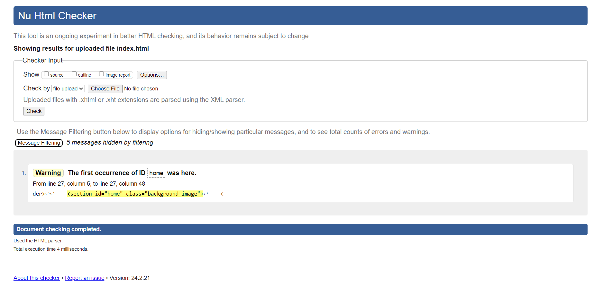
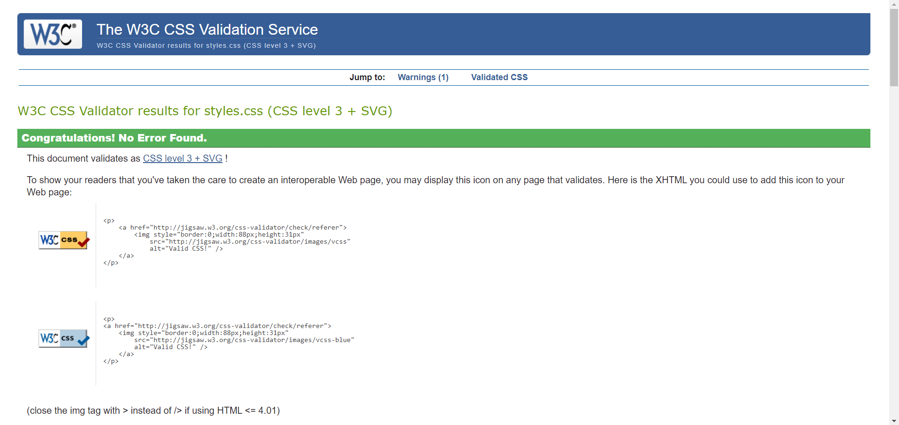

Embarking on the journey of web development, I faced a myriad of challenges and celebrated numerous successes. Learning the basics of coding, design, and debugging was an exhilarating yet complex experience. The initial hurdles of grasping HTML and CSS soon transformed into the satisfaction of crafting functional and visually appealing websites.
The module experience provided a structured learning path, guiding me through the intricacies of web development. Upskilling in technical aspects like responsive design and debugging significantly enhanced my problem-solving skills. However, there were moments of frustration, especially when debugging seemed like solving a puzzle with missing pieces.
The module's progressive nature allowed me to witness the evolution of my site over the term. Both technical and design aspects were meticulously honed. User interface (UI) design became a focal point, with careful consideration given to layout, color schemes, and font choices.
The design decisions for my site were influenced by contemporary trends and a desire for simplicity. Fonts and colors were chosen to ensure readability and a cohesive visual experience. Sites such as [https://www.awwwards.com/websites/portfolio/] and [https://www.behance.net/search/projects/web%20design%20portfolio] played a crucial role in shaping my design choices.
The validation reports confirm the adherence of my pages to HTML and CSS standards. Screenshots of these reports are included below. Furthermore, the video demonstration, accessible via [Your Video URL], showcases one of my projects in action.
 